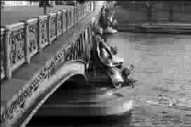

米哈博桥上的眼泪
●熊培云
三十而立，漂在巴黎
新近搬了家，我住在一首诗的旁边。十六区，右岸偏左。
初次见面，和其他法国朋友一样，房东太太问了同样的问题——为什么来法国？对于这个问题，我很少自问。回想我这些年读过的书，无意有缘，大多都和法国文化有些渊源。因此，来到法国继续学习，对我自己来说，并不意外。
对我最有影响的人不是巴尔扎克，而是罗曼·罗兰。罗兰这样描述法式乌托邦：世界安宁、博爱、在和平中进步、人权、天赋平等。其实，我对法国怀有某种情感，除了对这些大道理心存信念，还有一种近乎朴实的乡土之情——怀旧。
法国人的怀旧之情是举世无双的，有的电台就取名为怀旧。怀旧，其实就是抚摸文明发黄的书页，怀念短暂一生的美好，它让人生与历史相逢，在眷恋到心痛的回味中，穷尽过去与未来。所以普鲁斯特意味深长地说，天堂只在那些已然逝去的日子里。
一个雨水涟涟的冬天，我在塞纳河边排了两个小时的长队，第一次走进了奥赛博物馆。很多年来，我一直喜欢印象派的画，尤其钟情凡·高的《向日葵》与《星空》。当我爬着楼梯，快要走到凡·高的展厅时，想着这些年来痴心不改，在愿望即将实现时忽然觉得愿望也疲惫不堪。手扶着楼梯，只是喃喃自语，“凡·高，我来看你了！”
尽管在所有的藏品中，没有《向日葵》，也没有《婴孩》与《吃土豆的人们》，但我却第一次真切地看到了《自画像》《星空》与《奥维尔教堂》。油画不是印刷品，它是只能到现场看的。透过斑驳的画布，甚至已略显黯淡的色彩，你便可以看到无尽的岁月沧桑与隔世的心灵抚慰。在这里，画框虽已陈旧不堪，却为我们细心保留了文明的现场。
社会就是人类，历史就是人生。在法国，流通于欧元之前的法郎纸币是值得追忆的。
如今，无论是在大商场还是跳蚤市场，除了欧元标价外，商人还会不厌其烦地换算出法郎价格。那里栖息的不只是拿破仑与黎塞留的政治野心，更有自启蒙时代以来思想巨子的人文情怀——伏尔泰、孟德斯鸠、笛卡儿、莫里哀、哈辛、高乃依、夏多布里昂、雨果、德拉克洛瓦、塞尚……法国人怀旧，其实更多的是怀人。
铜臭里飘着书香
几年前，当我第一次在50法郎的纸币上看见圣埃克绪佩里与小王子，犹如第一次在巴黎书店里看到无数个版本的《小王子》、绣着法文“不要用眼睛，而是用心灵看”的方巾以及绣着“Le PetitPrince”的金色狐狸与白色小绵羊时，我因此明白了一个民族是如何呵护一颗心的。它不像袁世凯，刚当皇帝，便心急火燎将自己的脑袋铸成“大头”上了银元，以示“袁某人到此一游”，呵护一顶轮流坐庄的帽子。
在西岱岛旁，塞纳河两岸，排满了旧书摊。除了卖巴黎名胜的卡片与素描外，大多都是近一两百年间的旧书。那是一些固定在河边上的简易铁箱子。从市容上考虑，这大概算是“私盖”或“官搭”，当被拆除。但很多年来，塞纳河边的旧书商并没有被清理走。政府对文化之重视与宽容使塞纳河水也有了淡淡的书香。
法国出版社十分重视作者的名字(有时会占到封面的三分之一)，而不是用花里胡哨的书名，或忧国忧民担心你有了快感不喊，或“礼贤下体”，派“以下删去……”的庄之蝶将你诱奸。在法国，性是自由的，以“力比多”来勾引读者钱财根本不可行。出版商重视推出作者之名而非作品之名，一方面推销并鼓励了作者，同时也让作者因此对自己的名字负道义之责。常有人文学者悲叹近代中国沦为“文化小国”，究其根源，与国人重标签而非思想、重书名而轻作者、重市场而轻人心不无关系。20世纪后半叶，吾国剪刀加糨糊的学术武工队和著作装修队鱼贯而出，于是有了书香不足、腋臭有余的虚假繁荣。
一个民族，不能只纪念一个人，否则它就被自我轻视。
文明的敌人是杀人放火，用秦始皇来解释就是焚书坑儒。英法联军火烧圆明园时，中国人出奇地愤怒了。其实，自楚霸王以来，中国人自己关起门来放火，细算已有两千年，并世代相袭，因此有了阿Q“先前也阔过”式的文明。如今，中国进入转型期，也进入拆迁期，于无声处，许多“看不见的熊猫”正在消失，胡适先生“一点一滴地改造”，悲哀地沦落为“一点一滴地毁灭”。记得在国内时，有次拜访法国《解放报》的驻京记者韩石先生，当时他正准备搬家，因为他租住的四合院要拆了，当时他脸上的表情对于忙着多快好省搞建设的国人来说，始终是一个谜。答案在我的巴黎同学阿兰的嘴里：“如果你拆光了代表你们文明的四合院，复制一个赝品的巴黎，巴黎若有知，巴黎也会愤怒。”
在许多法国人看来，继往开来不是空洞的口号，而是文明延续的金科玉律。没有过去、无视将来的消费文明，其实不过是酒肉穿肠过的文明。有个道理是，只知道拆除过去的人，将来也会被人拆去，其结果是每一代都会在“拆迁”中疲于奔命。雕栏玉砌应犹在，古老的文明之墙上，用摩登的油漆写着斗大的“拆”字。它有着醒目的白色，我却看到了黑暗。
我想，法国人和中国人一样，都是有点“祖先崇拜”的。只是，前者不是家族之爱，而是人类之爱；不是血缘之爱，而是智慧之爱。一个弥漫书香的民族，爱它的祖先，用他们光荣的名字温暖一座城市；爱它的子孙，为他们呵护过去与现在的一切人与物；爱他们自己，做一个幸福的人，甘于辛勤奋斗一生，最后可以温暖地死去。
漂在巴黎，我住在一首诗的旁边。今夜我无心睡眠，踏过布热约街没足的梧桐树叶，独自倚在米哈博桥上，我竟又一次流下泪水，为了一座桥，一条河，一首诗。
诗的名字就叫《米哈博桥》，是短命的天才诗人阿波利奈尔·吉洛姆写的，如今它被刻在米哈博桥头：
米哈博桥下，塞纳河流淌，
我们的爱，
是否值得萦心怀，
但知苦尽终有甘来，
让黑夜降临，让钟声敲响，
时光流逝了，我依然在
……
(邹燕摘自“思想国”)